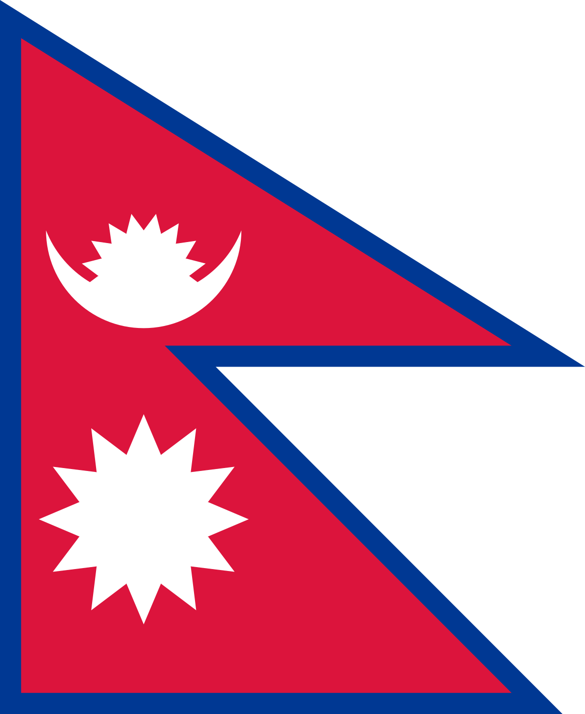
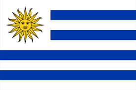
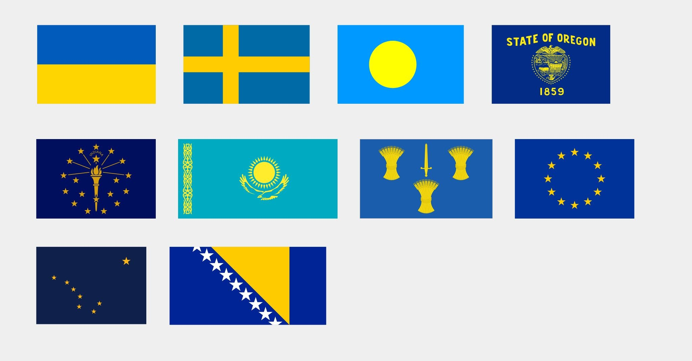
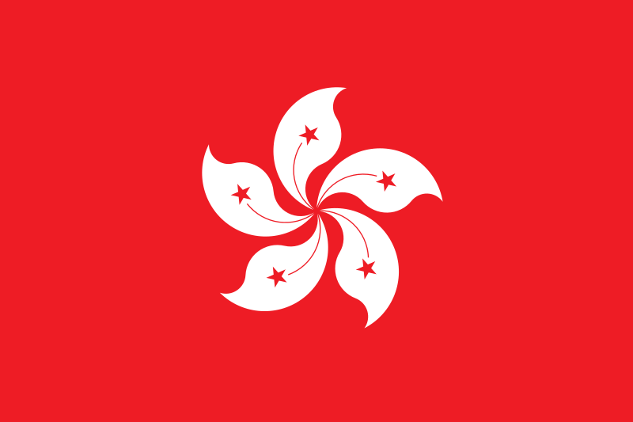
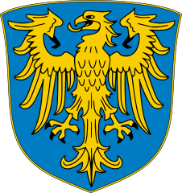
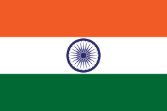
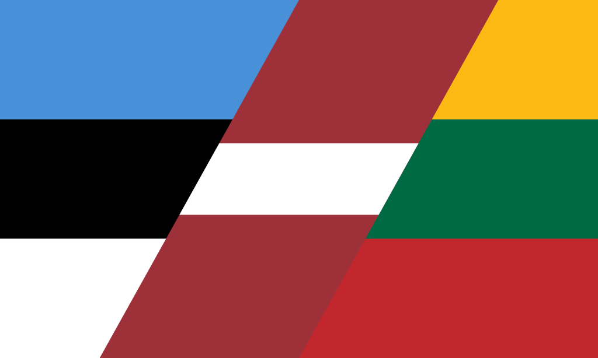

Dane osobowe
Aby rozpocząć quiz, najpierw podaj swoje dane osobowe.
Imię:
Nazwisko:
E-mail:
Data urodzenia (DD.MM.YYYY):
Quiz

Jakiego kraju jest to flaga?
Nepal
Somalia
Albania
Erytrea
Jakiego wojewodztwa w Polsce jest to flaga?
warmińsko-mazurskie
zachodniopomorskie
wielkopolskie
lubelskie

Jakiego kraju jest to flaga?
Panama
Wenezuela
Urugwaj
Paragwaj
Który kraj używał tej flagi między 1918 a 1920 rokiem?
Jugosławia
Czechosłowacja
Litwa
Węgry

Jakie flagi posiadają tylko barwy żólte i niebieskie?
Szwecja
Rumunia
Ukraina
Norwegia
Bośnia i Hercegowina

Które miasto używa tej flagi?
Macau
Vancouver
Hong Kong
Tokio

Wymień kraje które mają orła na swoim godle.
Rumunia
Czechy
Niemcy
Rosja
Węgry

Z którymi krajami ten kraj z tą flagą ma roszczenia terytorialne?
Birma
Sri Lanka
Chiny
Bangladesz
Pakistan
Które kraje posiadają na swojej fladze tzw. Union Jack poza UK?
Irlandia
Kanada
Australia
Fiji
Cypr

Zaznacz kraje należące do grupy tzw. krajów bałtyckich.
Łotwa
Estonia
Finlandia
Polska
Litwa
Gdy chcesz rozpocząć quiz od samego początku, kliknij przycisk:
Gdy skończyłeś odpowiadać na pytania, kliknij przycisk: